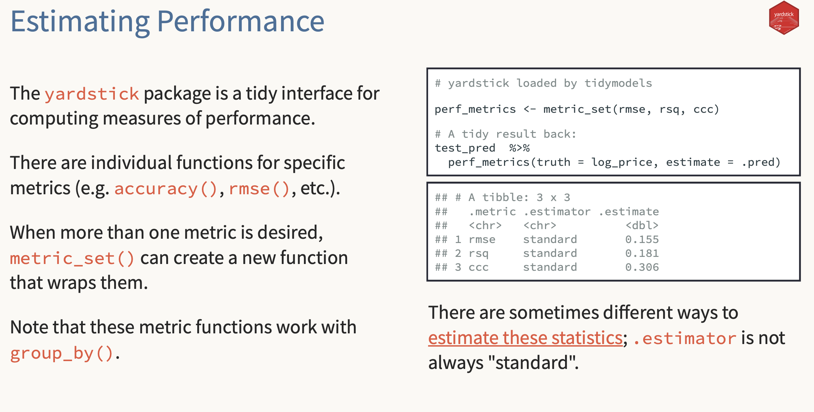

Important questions (ISLR Ch. 3)
The “important questions” checklist
Even when the output looks clean:
- Is the relationship linear?
- Are residuals “well-behaved”?
- Are there outliers or high-leverage points?
- Are predictors correlated (collinearity)?
- Are we evaluating fairly (no peeking)?
Linear model assumptions (in English)
A linear model is most useful when:
- the mean relationship is roughly linear
- residuals don’t have obvious structure
- noise is roughly stable across the range (often false in finance)
- individual observations aren’t dominating the fit
Residual plots: what we look for
Residuals vs fitted values:
- random scatter around 0 (good)
- curve pattern (missing nonlinearity)
- funnel / changing spread (heteroskedasticity)
- a few huge residuals (outliers / events)
Finance translation
If residuals show patterns, possible stories:
- regime shifts / volatility clustering
- missing risk factor exposure
- nonlinear exposure (beta changes in stress)
- event days (earnings, macro surprises)
Don’t tune on the test set
- Keep a test set you look at once (or rarely)
- Use train/validation (or resampling) for model choices
- In finance: time split → the future is the test
Yardstick as a metrics calculator
Why yardstick is handy (even using base lm()):
- consistent definitions (no copy/paste metric bugs)
- clean “truth vs estimate” interface
- works nicely with tibbles
